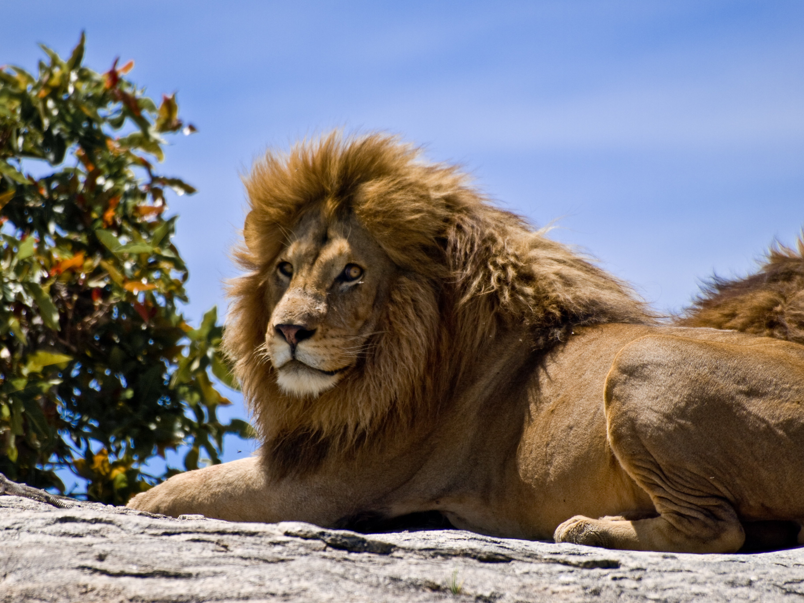

ლომი
ლომი (ლათ. Panthera leo) — მტაცებელი ძუძუმწოვარი კატისებრთა ოჯახის, პანტერათა გვარის წარმომადგენელი. მისი სხეულის სიგრძე (ხვადისა) 180-240 სმ, მასა 180-227 კგ აღწევს. ძუ ტანად ხვადზე უფრო პატარაა. ლომს აქვს ძლიერი მოქნილი სხეული, მასიური თავი, გრძელი დინგი, შავი ფუნჯით დაბოლოებული გრძელი კუდი. მოზრდილ ხვადს ფაფარიც აქვს, დანარჩენი ბალანი მოკლეა და მოყვითალო. ბოკვერი ხალებიანია. ცნობილია ლომის 2 ქვესახეობა - აფრიკული და აზიური.
ლომი გავრცელებულია ეკვატორულ აფრიკაში (დაცულია ნაკრძალებში) და ინდოეთში (გუჯარეთის შტატი). VIII-X საუკუნეებში ლომი კავკასიაშიც ბინადრობდა. ცხროვრობს სავანებში, ნახევრად უდაბნოებში, იშვიათად უდაბნოებში. იკვებება ხერხემლიანი ცხოველებით, ჭამს აგრეთვე ლეშს, ნადირობს შებინდებისას და ღამით. ადამიანს იშვიათად ესხმის თავს. ბუნაგს იკეთებს გამოქვაბულში, ნაპრალში, ორმოში. აქვს ძლიერი ხმა, რომელიც საკმაოდ შორს ისმის. მაკეობა 105-112 დღემდე გრძელდება. შობს 3-4 თვალახელილ (ზოგჯერ თვალაუხილავ) ბოკვერს, მათი სხეულის სიგრძე 30 სმ, ხოლო მასა 400 გ აღწევს. სქესობრივად მწიფდება მე-4 წელს. ცოცხლობს 30-35 წელს (იშვიათად მეტს). ადვილად იწვრთნება, ტყვეობაშიც (ზოოპარკი, ზოობაღი) მრავლდება.

ვეფხვი
ვეფხვი (ლათ. Panthera tigris) — მტაცებელი ძუძუმწოვარი კატისებრთა ოჯახის, პანტერათა გვარის წარმომადგენელი.
ვეფხვი კატისებრთა ოჯახის ყველაზე დიდი წარმომადგენელია, სხეულის სიგრძე 1,4–2,8 მ, კუდის — 0,6–1,1 მ, წონა 100–300 კგ. წაგრძელებული სხეული მოხატული აქვს განივი ზოლებით. გავრცელებულია ჩრდილოეთ კორეაში, ჩინეთში, ინდოეთში, ინდოჩინეთში, მალაის არქიპელაგზე, ჩრდილოეთ ირანში, უსურისა და ამურის მხარეებში, თალიშში, ამუდარიის ხეობაში, იშვიათად თურქმენეთში. ვეფხვი ნადირობს მსხვილ ძუძუმწოვრებზე, იშვიათად ფრინველებზე, ქვეწარმავლებზე და სხვა. თავს ესხმის ადამიანსაც. ვეფხვი 2–3 წელიწადში ერთხელ შობს თვალაუხილავ, უსუსურ 2–4 ბოკვერს (მაკეობა 105 დღემდეა).2 წლის ასაკიდან უკვე საკმაო ძალა აქვს დამოუკიდებლად სანადიროდ, სქესობრივ სიმწიფეს აღქევს 4–5 წლისა, ცოცხლობს საშუალოდ 8–10 წელს. აქვს 6–7 მ სიგრძის ნახტომი.[2]
ქართულ ზეპირსიტყვიერებაში და ძვ. მწერლობაში სიტყვა „ვეფხვი“ აღნიშნავდა ჯიქს (ლეოპარდს ანუ პანთერას — Panthera pardus), დღევანდელი გაგებით კი მხოლოდ XX საუკუნეში დამკვიდრდა.[2]